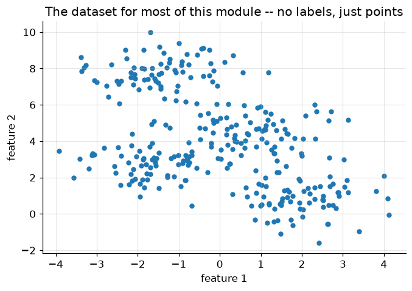
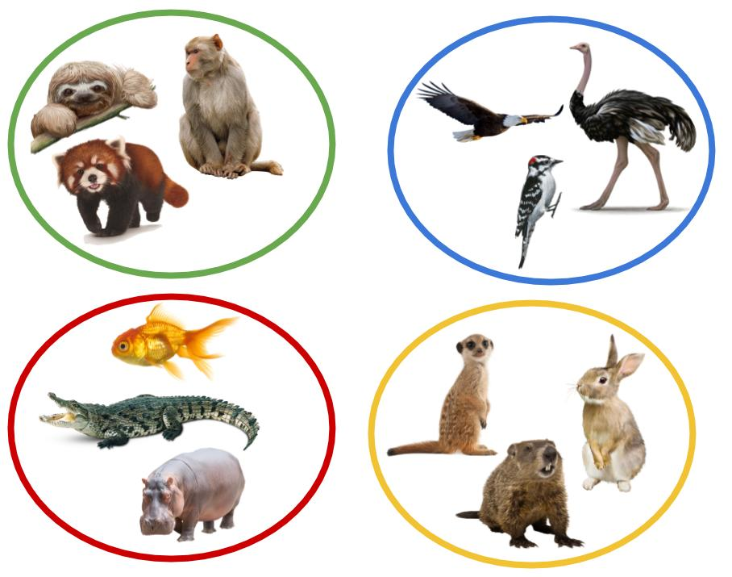
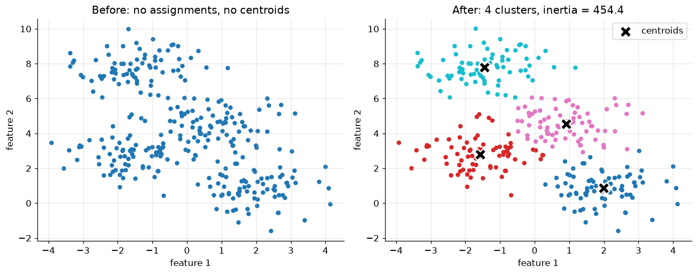
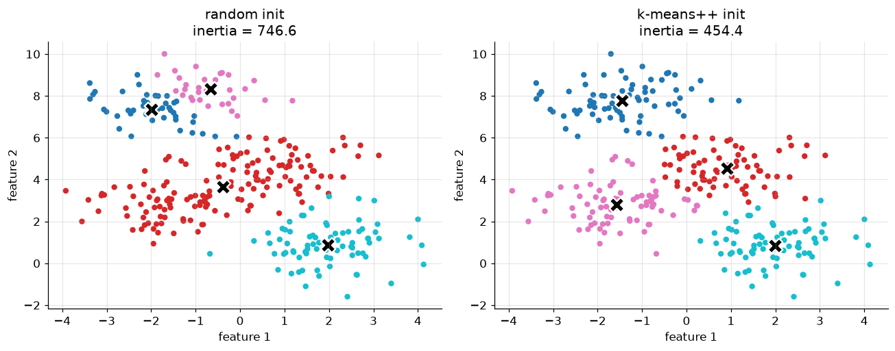
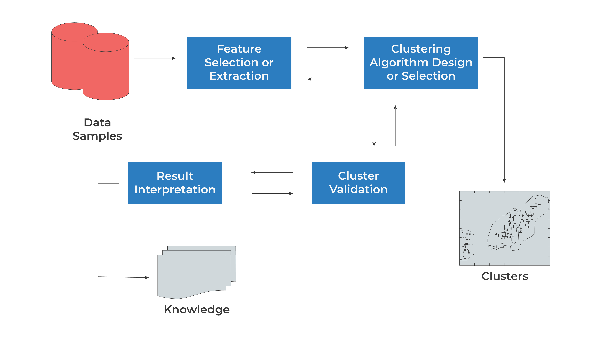
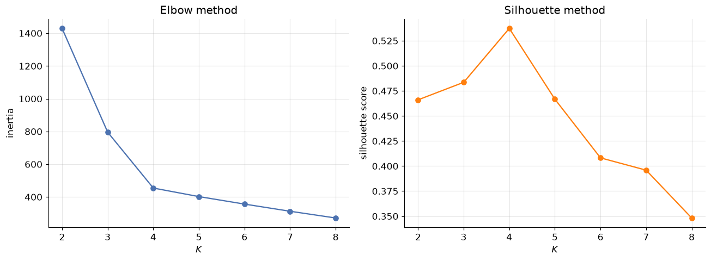
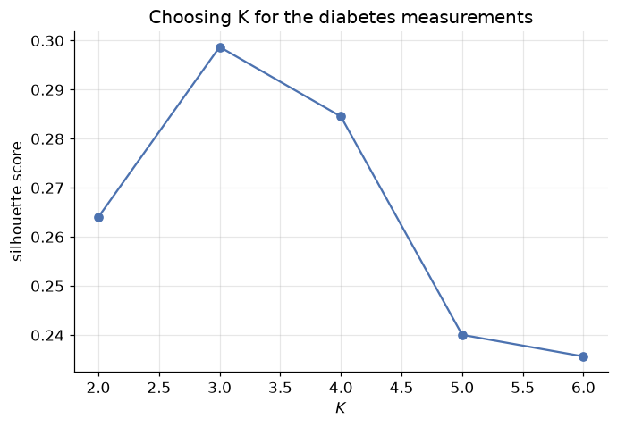
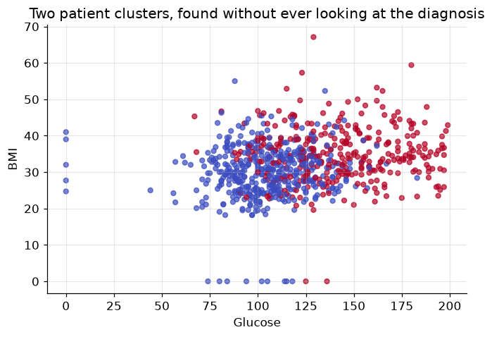
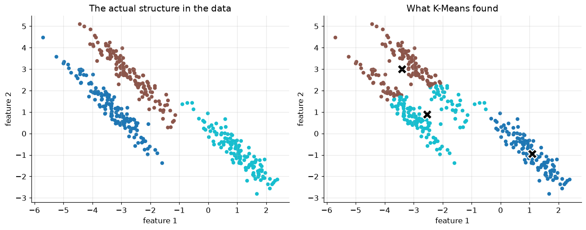

Unsupervised Learning: K-Means Clustering
DCS 404 · Data Science and Machine Learning
Every model this course has built so far learned from an answer key. Linear regression had sales, logistic
regression had admit, decision trees had Outcome — some column \(y\) the model was trained to predict, and
some notion of "correct" it was graded against. Today that answer key disappears. We're handed a table of
features and nothing else, and the question changes from what's the right label? to does this data have
any structure at all — and if so, what does it look like?
That's unsupervised learning, and clustering is its most common form: grouping observations so that similar ones end up together and dissimilar ones end up apart, with no labels to check our work against. This module covers K-Means, by far the most widely used clustering algorithm — simple enough to implement from scratch in a dozen lines, and the right first stop before the more exotic clustering methods (hierarchical, density-based) that build on the same core idea.
How to work through this
Run every code cell in order (Shift + Enter); later sections reuse the synthetic dataset built in Setup.
This module leans on ideas from earlier in the course — Euclidean distance from the K-Nearest Neighbors
module, feature standardisation from Gradient Descent, the train-many-models-and-compare-a-score pattern from
Evaluation Metrics — without re-deriving any of them.
One scope note: clustering is a big field, and this module deliberately covers one algorithm well rather than many algorithms shallowly. K-Means variants (K-Medoids, K-Modes, Mini-Batch K-Means) and entirely different clustering families (hierarchical, density-based) are real and useful, but they're future material — Section 7 points to exactly where they'd fit in.
Learning objectives
After completing this module you will be able to:
- Explain what makes clustering unsupervised, and contrast it with the classification/regression problems from earlier modules.
- State the K-Means objective function (inertia / sum of squared distances to centroid) and explain why it's optimized by coordinate descent rather than gradient descent.
- Implement K-Means from scratch — assign, update, repeat — and verify it against scikit-learn.
- Explain why centroid initialization matters, and how K-Means++ fixes the worst failures of random initialization.
- Choose the number of clusters \(K\) using the elbow method and the silhouette score.
- Apply K-Means to a real dataset and interpret the resulting clusters.
- Describe K-Means' key assumption (roughly spherical, similarly-sized clusters) and recognise when it fails.
Setup
Run this once. Libraries, the usual plotting style, and one synthetic dataset — four well-separated blobs — reused for most of this module.
from pathlib import Path
import numpy as np
import pandas as pd
import matplotlib.pyplot as plt
import seaborn as sns
from sklearn.datasets import make_blobs
from sklearn.cluster import KMeans
from sklearn.preprocessing import StandardScaler
from sklearn.metrics import silhouette_score
plt.rcParams.update({
"figure.figsize": (7, 4.5),
"figure.dpi": 110,
"axes.grid": True,
"grid.alpha": 0.3,
"axes.spines.top": False,
"axes.spines.right": False,
"font.size": 11,
})
sns.set_palette("deep")
RANDOM_STATE = 0
# Four well-separated blobs -- small and synthetic on purpose, so every plot stays readable
X, y_true = make_blobs(n_samples=300, centers=4, cluster_std=0.9, random_state=RANDOM_STATE)
print(f"{X.shape[0]} points, {X.shape[1]} features, generated from {len(set(y_true))} true clusters")
plt.scatter(X[:, 0], X[:, 1], s=20, color="tab:blue")
plt.title("The dataset for most of this module -- no labels, just points")
plt.xlabel("feature 1"); plt.ylabel("feature 2")
plt.show()
300 points, 2 features, generated from 4 true clusters

1. From "which label?" to "what groups?"
Imagine visiting a zoo for the first time with no idea what any of the animals are called. You'd still notice that some animals live in water, some fly, some live underground — and without ever being told a single species name, you could sort the animals into sensible groups just from what you observe.

*Figure 1 — Grouping by observed similarity, with no labels at all.*That's clustering: partitioning observations into groups so that points in the same group are similar and points in different groups are dissimilar — using only the features, never a label. It's the most common form of unsupervised learning, the branch of machine learning that finds structure in unlabeled data rather than predicting a known target.
Clustering looks superficially like classification — both end with "this point belongs to group \(k\)" — but the two solve different problems. Classification learns a boundary from examples that already carry the correct answer; clustering has no correct answer to learn from, only the geometry of the points themselves. That absence of ground truth will matter again in Section 5: without labels, "how good is this clustering?" becomes its own, genuinely harder question.
Clustering algorithms come in several families, each built around a different notion of "similar": partition-based (today's topic — divide the data into \(K\) groups, each represented by a centroid), hierarchical (build a tree of nested clusters, cut it wherever makes sense), and density-based (a cluster is any densely-packed region, however oddly shaped, separated from others by sparse space). This module focuses entirely on the first family — specifically K-Means — because it's the algorithm nearly every other clustering method is explained in contrast to.
2. The K-Means algorithm
K-Means represents each of \(K\) clusters by a single point — its centroid — and assigns every observation to whichever centroid is closest. Formally, given data points \(\mathbf x_1, \dots, \mathbf x_N\), K-Means finds cluster assignments \(\boldsymbol c\) and centroids \(\boldsymbol \mu_1, \dots, \boldsymbol \mu_K\) that minimise
— the total squared distance from every point to its own cluster's centroid. This quantity has a few names worth recognising in the wild: inertia, within-cluster sum of squares (WCSS), or just the K-Means objective. Small \(\mathcal J\) means every point sits close to its centroid — tight, compact clusters.
Two unknowns sit inside \(\mathcal J\) at once — the assignments \(\boldsymbol c\) and the centroids \(\boldsymbol \mu\) — and they depend on each other, which rules out plain gradient descent (there's no single gradient to follow when the thing you're optimizing over includes a discrete assignment). The fix is coordinate descent: fix one set of unknowns, optimize the other exactly, then swap. K-Means alternates two steps, each of which has a simple, exact solution:
- Assign — with centroids fixed, send each point to its nearest centroid: $\(c_i \leftarrow \underset{k}{\arg\min} \left\| \mathbf x_i - \boldsymbol \mu_k \right\|_2^2\)$
- Update — with assignments fixed, recompute each centroid as the mean of the points now assigned to it: $\(\boldsymbol \mu_k \leftarrow \frac{1}{|\{i : c_i = k\}|} \sum_{i:\, c_i = k} \mathbf x_i\)$
Repeat until nothing changes. Each step can only decrease \(\mathcal J\) (Step 1 by construction sends every point to its closest centroid; Step 2 by construction sets each centroid to the mean that minimises squared distance to its own cluster) — so \(\mathcal J\) falls monotonically and the algorithm is guaranteed to converge, in finite steps, to some stable assignment. Not necessarily the best one, though — \(\mathcal J\) is non-convex, so different starting points can converge to different (and sometimes much worse) stable points. Section 4 shows exactly how much that can matter.
3. K-Means from scratch
Assign, update, repeat — that's genuinely the whole algorithm. Let's write it directly from Section 2's two steps and check it against scikit-learn's implementation on the same data.
def kmeans(X, k, n_iter=100, seed=RANDOM_STATE):
'''Lloyd's algorithm: assign points to the nearest centroid, recompute centroids, repeat.'''
rng = np.random.default_rng(seed)
centroids = X[rng.choice(len(X), size=k, replace=False)] # Forgy init: k real data points
for _ in range(n_iter):
# Assign step: distance from every point to every centroid, then the closest one
distances = np.linalg.norm(X[:, None, :] - centroids[None, :, :], axis=2)
labels = distances.argmin(axis=1)
# Update step: each centroid becomes the mean of the points now assigned to it
new_centroids = np.array([X[labels == j].mean(axis=0) for j in range(k)])
if np.allclose(new_centroids, centroids): # nothing moved -- converged
break
centroids = new_centroids
inertia = sum(np.sum((X[labels == j] - centroids[j]) ** 2) for j in range(k))
return centroids, labels, inertia
centroids, labels, inertia = kmeans(X, k=4)
print(f"from-scratch inertia: {inertia:.2f}")
sk_model = KMeans(n_clusters=4, random_state=RANDOM_STATE, n_init=10).fit(X)
print(f"scikit-learn inertia: {sk_model.inertia_:.2f}")
from-scratch inertia: 454.38
scikit-learn inertia: 454.38
The two numbers match to several decimal places — our dozen-line implementation is doing exactly what
scikit-learn's KMeans does internally (which is itself called Lloyd's algorithm, after the 1957/1982
paper that first described it). Let's look at what it actually found.
fig, axes = plt.subplots(1, 2, figsize=(12, 4.8))
axes[0].scatter(X[:, 0], X[:, 1], s=20, color="tab:blue")
axes[0].set_title("Before: no assignments, no centroids")
axes[1].scatter(X[:, 0], X[:, 1], c=labels, cmap="tab10", s=20)
axes[1].scatter(centroids[:, 0], centroids[:, 1], marker="X", s=200,
c="black", edgecolor="white", linewidth=1.5, label="centroids")
axes[1].set_title(f"After: {4} clusters, inertia = {inertia:.1f}")
axes[1].legend()
for ax in axes:
ax.set_xlabel("feature 1"); ax.set_ylabel("feature 2")
plt.tight_layout()
plt.show()

Four tight, well-separated groups, each with a centroid sitting at its visual centre — exactly what we'd sketch by eye on this data. That's a fair test, though: these blobs were generated to be easy. Section 6 brings in a real dataset where the "right" grouping isn't obvious just from looking.
4. Why initialization matters: K-Means++
kmeans above starts from \(K\) randomly chosen data points (Forgy initialization) and never looks back.
Section 2 already flagged the risk: coordinate descent only guarantees a stable point, not the best one.
Let's force a bad draw and watch what happens.
random_init = KMeans(n_clusters=4, init="random", n_init=1, random_state=5).fit(X)
smart_init = KMeans(n_clusters=4, init="k-means++", n_init=1, random_state=5).fit(X)
fig, axes = plt.subplots(1, 2, figsize=(12, 4.8))
for ax, model, name in zip(axes, [random_init, smart_init], ["random init", "k-means++ init"]):
ax.scatter(X[:, 0], X[:, 1], c=model.labels_, cmap="tab10", s=20)
ax.scatter(model.cluster_centers_[:, 0], model.cluster_centers_[:, 1],
marker="X", s=200, c="black", edgecolor="white", linewidth=1.5)
ax.set_title(f"{name}\ninertia = {model.inertia_:.1f}")
ax.set_xlabel("feature 1"); ax.set_ylabel("feature 2")
axes[0].set_ylabel("feature 2")
plt.tight_layout()
plt.show()
print(f"random init inertia: {random_init.inertia_:.1f}")
print(f"k-means++ init inertia: {smart_init.inertia_:.1f}")

random init inertia: 746.6
k-means++ init inertia: 454.4
Same data, same \(K\), same number of iterations to converge — a single unlucky starting draw left two centroids fighting over one cluster while a different cluster got none of its own, and coordinate descent dutifully converged to that arrangement anyway, because nothing local told it to do otherwise.
K-Means++ fixes this by making initialization itself a little smarter, without touching the assign/update loop at all:
- Pick the first centroid uniformly at random from the data.
- For every other point, compute its squared distance to the nearest centroid chosen so far.
- Pick the next centroid randomly, but weighted so that far-away points are more likely to be chosen.
- Repeat 2-3 until \(K\) centroids are chosen.
The effect is centroids that start out spread across the data rather than clumped together by chance — points
far from every existing centroid are exactly the points most likely to belong to a cluster that has no
centroid yet. It's still random (so still not a global-optimum guarantee), but the failure mode above becomes
far less likely. It's also scikit-learn's default: plain KMeans(n_clusters=k) already uses
init="k-means++" unless told otherwise, and in practice is run several times from different seeds anyway
(n_init, default 10 in recent scikit-learn), keeping whichever run reaches the lowest inertia. From here on,
every KMeans call in this module leaves both settings at their defaults.
5. Choosing \(K\): the elbow method and the silhouette score
Every example so far quietly assumed \(K=4\) — because we generated the data and already knew the answer. Real data never comes with a "true number of clusters" label attached, and that absence of ground truth is the central difficulty Section 1 warned about: K-Means will happily produce some clustering for any \(K\) you hand it, correct or not.
One number that will not help: inertia alone. It decreases every single time \(K\) grows — push \(K\) all the way to \(N\) (one cluster per point) and inertia hits exactly zero, which is obviously not a useful clustering. What inertia's shape can tell us is when adding another cluster stops buying much:

*Figure 2 — The clustering workflow: Sections 2-4 built the "Clustering Algorithm" box, this section is "Cluster Validation," and Section 6 is "Result Interpretation."*Ks = range(2, 9)
inertias = []
silhouettes = []
for k in Ks:
model = KMeans(n_clusters=k, random_state=RANDOM_STATE, n_init=10).fit(X)
inertias.append(model.inertia_)
silhouettes.append(silhouette_score(X, model.labels_))
fig, axes = plt.subplots(1, 2, figsize=(12, 4.5))
axes[0].plot(Ks, inertias, marker="o")
axes[0].set_xlabel("$K$"); axes[0].set_ylabel("inertia")
axes[0].set_title("Elbow method")
axes[1].plot(Ks, silhouettes, marker="o", color="tab:orange")
axes[1].set_xlabel("$K$"); axes[1].set_ylabel("silhouette score")
axes[1].set_title("Silhouette method")
plt.tight_layout()
plt.show()
best_k = Ks[int(np.argmax(silhouettes))]
print(f"silhouette score peaks at K = {best_k}")

silhouette score peaks at K = 4
The elbow method looks for the point where the inertia curve stops falling steeply and starts to flatten — the "elbow" — reasoning that clusters beyond that point are splitting real structure into pieces rather than capturing anything new. It's a judgment call read off a picture, which is exactly its weakness: not every dataset produces an obvious elbow.
The silhouette score is a real number, not a picture, and it doesn't need inertia's "always decreasing" caveat. For a single point \(\mathbf x_i\), define \(a(\mathbf x_i)\) as its mean distance to every other point in its own cluster (small = tightly packed), and \(b(\mathbf x_i)\) as its mean distance to the points of the nearest other cluster (large = well separated from its neighbours). The silhouette coefficient is
which lives in \([-1, 1]\): close to \(1\) means a point sits comfortably inside its own tight cluster, far from
any other; close to \(0\) means it's sitting right on a boundary; negative means it's arguably in the wrong
cluster. silhouette_score averages \(s(\mathbf x_i)\) over every point, giving one number per value of \(K\) —
and here it peaks exactly at the true \(K=4\), agreeing with both the elbow and the ground truth we generated
the data with.
6. Real data: clustering diabetes patients
The Pima Indians Diabetes dataset returns from the Classification module — 768 patients, each with
physiological measurements and a diabetes / no diabetes label. Last time, that label was the target a
classifier learned to predict. This time we throw it away entirely and ask a different question: ignoring
the outcome, does K-Means find any natural grouping in the measurements themselves?
def load_csv(name, **kwargs):
for candidate in [Path(f"data/{name}"), Path(f"notebooks/data/{name}")]:
if candidate.exists():
return pd.read_csv(candidate, **kwargs)
raise FileNotFoundError(f"Could not find {name}")
diabetes = load_csv("diabetes.csv")
features = ["Glucose", "BMI", "Age", "BloodPressure"]
X_diab = diabetes[features].values
# Standardise -- Glucose (0-199) and Age (21-81) live on very different scales,
# and K-Means' Euclidean distance treats every feature's units as equally important
X_diab_scaled = StandardScaler().fit_transform(X_diab)
diab_Ks = range(2, 7)
diab_silhouettes = [
silhouette_score(X_diab_scaled, KMeans(n_clusters=k, random_state=RANDOM_STATE, n_init=10).fit(X_diab_scaled).labels_)
for k in diab_Ks
]
plt.plot(diab_Ks, diab_silhouettes, marker="o")
plt.xlabel("$K$"); plt.ylabel("silhouette score")
plt.title("Choosing K for the diabetes measurements")
plt.show()
print({k: round(s, 3) for k, s in zip(diab_Ks, diab_silhouettes)})

{2: 0.264, 3: 0.299, 4: 0.285, 5: 0.24, 6: 0.236}
Real data rarely hands you as clean an answer as the synthetic blobs did. The silhouette score edges slightly higher at \(K=3\) than \(K=2\), but the two are close, and \(K=2\) produces a split simple enough to actually interpret — a good reminder that the highest score on a chart is a suggestion, not a verdict; domain judgment about what's useful still gets a vote. Let's fit \(K=2\) and see what it found.
kmeans_diab = KMeans(n_clusters=2, random_state=RANDOM_STATE, n_init=10).fit(X_diab_scaled)
diabetes["cluster"] = kmeans_diab.labels_
plt.scatter(diabetes["Glucose"], diabetes["BMI"], c=diabetes["cluster"], cmap="coolwarm", s=20, alpha=0.7)
plt.xlabel("Glucose"); plt.ylabel("BMI")
plt.title("Two patient clusters, found without ever looking at the diagnosis")
plt.show()
diabetes.groupby("cluster")[features].mean().round(1)

| Glucose | BMI | Age | BloodPressure | |
|---|---|---|---|---|
| cluster | ||||
| 0 | 104.4 | 29.8 | 27.0 | 61.8 |
| 1 | 142.9 | 34.9 | 41.6 | 78.8 |
One cluster runs consistently higher on every one of these four measurements than the other — K-Means found a real physiological split using nothing but distances in feature space. Now, and only now, let's check it against the diagnosis we deliberately withheld:
crosstab = pd.crosstab(diabetes["cluster"], diabetes["Outcome"])
crosstab.columns = ["no diabetes", "diabetes"]
crosstab.index = [f"cluster {i}" for i in crosstab.index]
print(crosstab)
diabetes_rate = diabetes.groupby("cluster")["Outcome"].mean()
for cluster_id, rate in diabetes_rate.items():
print(f"cluster {cluster_id}: {rate:.1%} of patients have diabetes")
no diabetes diabetes
cluster 0 356 83
cluster 1 144 185
cluster 0: 18.9% of patients have diabetes
cluster 1: 56.2% of patients have diabetes
The cluster with the higher Glucose/BMI/Age/BloodPressure profile also has the far higher diabetes rate — unsupervised structure, discovered with zero access to the label, lines up with a diagnosis that carries real clinical meaning. That's not a coincidence and it's not magic: diabetes risk genuinely correlates with these measurements, so a grouping built purely from their geometry was always likely to shadow it. This is exactly how clustering earns its keep in practice — as an exploratory tool that surfaces structure worth investigating further, not as a replacement for the labelled classifier from the Classification module.
7. Where K-Means struggles
K-Means' assign step always draws a straight-line (Euclidean) boundary between neighbouring centroids, which bakes in an assumption worth stating plainly: it works best when clusters are roughly round and similar in size. Real structure that violates that assumption breaks it, visibly.
X_round, y_round = make_blobs(n_samples=400, centers=3, random_state=170)
stretch = [[0.6, -0.6], [-0.4, 0.8]] # a linear transform that stretches the blobs diagonally
X_stretched = X_round @ stretch
kmeans_stretched = KMeans(n_clusters=3, random_state=RANDOM_STATE, n_init=10).fit(X_stretched)
fig, axes = plt.subplots(1, 2, figsize=(12, 4.8))
axes[0].scatter(X_stretched[:, 0], X_stretched[:, 1], c=y_round, cmap="tab10", s=20)
axes[0].set_title("The actual structure in the data")
axes[1].scatter(X_stretched[:, 0], X_stretched[:, 1], c=kmeans_stretched.labels_, cmap="tab10", s=20)
axes[1].scatter(kmeans_stretched.cluster_centers_[:, 0], kmeans_stretched.cluster_centers_[:, 1],
marker="X", s=200, c="black", edgecolor="white", linewidth=1.5)
axes[1].set_title("What K-Means found")
for ax in axes:
ax.set_xlabel("feature 1"); ax.set_ylabel("feature 2")
plt.tight_layout()
plt.show()

The left panel is the true structure — three elongated, diagonal clusters. The right panel is K-Means' answer with the correct \(K=3\): it slices straight through clusters that are genuinely stretched, because a centroid-and-Euclidean-distance model can only ever draw round-ish decision regions, no matter how well \(K\) is chosen or how carefully centroids are initialised. This isn't a bug to patch with a better seed — it's the algorithm's central assumption showing its limit.
A few other situations worth knowing about, without needing to solve them today:
- Outliers distort centroids badly, since a centroid is a mean, and means are notoriously sensitive to extreme values (the same reason the Regression module cared about outliers). K-Medoids — using an actual data point, the medoid, as each cluster's representative instead of a computed mean — is the standard fix.
- Unscaled features silently let whichever feature has the largest numeric range dominate every distance calculation. Section 6 standardised the diabetes features for exactly this reason — the same lesson the Gradient Descent module taught about optimization applies just as directly to distance-based clustering.
- Non-round clusters, as just demonstrated, are where density-based methods (DBSCAN and relatives) take over — they define a cluster as a dense region of any shape, with no centroid and no assumption of roundness at all. Hierarchical clustering sidesteps choosing \(K\) upfront entirely, building a full tree of nested clusters and letting you pick the cut afterward. Both are natural next modules once K-Means feels comfortable.
8. Your turn
Add cells below each exercise. Exercises 2 and 4 are the ones that consolidate the big ideas.
Exercise 1 — Verify the update step by hand.
Take the centroids and labels from Section 3's kmeans(X, k=4) run. For cluster 0, manually compute
X[labels == 0].mean(axis=0) and confirm it matches centroids[0]. Explain in one sentence why this must
always be true the moment the loop has converged.
Exercise 2 — How much does a bad seed cost, on average?
Section 4 showed one dramatic random-init failure at random_state=5. Loop random_state from 0 to 29 with
init="random", n_init=1, record each run's inertia, and compare the distribution against the same sweep with
init="k-means++". What fraction of random-init runs land more than 20% above the best k-means++ run?
Exercise 3 — Silhouette by hand for one point.
Pick any single point from the Section 5 blobs at \(K=4\). Manually compute \(a(\mathbf x_i)\) (mean distance to
its own cluster) and \(b(\mathbf x_i)\) (mean distance to the nearest other cluster) using NumPy, then compute
\(s(\mathbf x_i)\) and check it against sklearn.metrics.silhouette_samples(X, labels)[i].
Exercise 4 — Cluster the full diabetes feature set. Section 6 used only four of the eight diabetes features. Refit K-Means (with standardisation) on all eight, re-run the silhouette sweep, and compare the chosen \(K\) and the resulting cluster-vs-Outcome crosstab against Section 6's result. Did more features sharpen the split or blur it?
Exercise 5 — Watch K-Means fail on circles.
Generate two concentric circles with sklearn.datasets.make_circles(n_samples=300, noise=0.05, factor=0.5)
and fit K-Means with K=2. Plot the result. Explain, using Section 7's "roughly round, similarly sized"
assumption, exactly why K-Means cannot succeed here no matter how it's initialised — and what a density-based
method would need to look at instead of centroids to get it right.
9. If you remember nothing else
-
Clustering is unsupervised — grouping data by similarity alone, with no label to train against or check against. That absence of ground truth is what makes "is this a good clustering?" a genuinely harder question than any supervised metric from the Evaluation Metrics module.
-
K-Means minimises inertia — total squared distance from every point to its cluster's centroid — by coordinate descent: repeatedly assign points to their nearest centroid, then move each centroid to the mean of its assigned points, until nothing changes.
-
K-Means is guaranteed to converge, monotonically decreasing its objective every step, but not guaranteed to reach the best solution — the objective is non-convex, so a poor starting point can trap it in a visibly worse stable arrangement.
-
K-Means++ initialises centroids by preferring points far from ones already chosen, sharply reducing (though not eliminating) the chance of a bad local optimum. It's scikit-learn's default, alongside running several random restarts (
n_init) and keeping the best. -
Choosing \(K\): inertia always decreases as \(K\) grows, so it's read as a shape (the elbow method, inexact) rather than a single number. The silhouette score — how much closer a point is to its own cluster than to its nearest neighbour cluster — gives one comparable number per \(K\) and doesn't share that always-decreasing flaw.
-
Standardise features before clustering — Euclidean distance treats every feature's raw numeric scale as equally important, exactly the lesson the Gradient Descent module taught about optimization.
-
K-Means assumes clusters are roughly round and similarly sized; elongated, unevenly-sized, or non-convex structure breaks it visibly, no matter how carefully \(K\) or the initialisation is chosen. That's what hierarchical and density-based clustering exist to handle instead.
-
On real data (Pima diabetes measurements), K-Means found a two-group split, built with zero access to the diagnosis label, that lined up with a meaningfully different diabetes rate between groups — clustering's actual job: surfacing structure worth investigating, not replacing a trained classifier.
10. Further reading and glossary
Further reading
- Stuart Lloyd (1982), Least Squares Quantization in PCM — the paper behind "Lloyd's algorithm," the assign/update loop this module implemented from scratch.
- David Arthur & Sergei Vassilvitskii (2007), k-means++: The Advantages of Careful Seeding — the original K-Means++ paper.
- scikit-learn's guide to clustering — every algorithm mentioned in Section 7 (and many more), with the assumptions and trade-offs of each.
- scikit-learn's K-Means assumptions example — the anisotropic-blob demonstration Section 7 adapted, alongside a few other failure modes worth seeing.
- Peter J. Rousseeuw (1987), Silhouettes: A Graphical Aid to the Interpretation and Validation of Cluster Analysis — the original silhouette-score paper.
Glossary
| Term | Meaning |
|---|---|
| Unsupervised learning | Learning structure from data with no target label to train or validate against. |
| Clustering | Partitioning observations into groups of similar points, with no ground-truth grouping given. |
| Centroid | The point (typically the mean) representing a cluster in partition-based clustering. |
| Inertia / WCSS | K-Means' objective: total squared distance from every point to its cluster's centroid. |
| Coordinate descent | Optimizing by alternately fixing one set of parameters and solving exactly for the other. |
| Lloyd's algorithm | The classic assign-then-update loop that implements K-Means. |
| Forgy initialization | Initializing centroids as \(K\) randomly chosen data points. |
| K-Means++ | An initialization scheme that prefers centroids far from ones already chosen. |
n_init |
The number of random restarts scikit-learn's KMeans runs, keeping the lowest-inertia result. |
| Elbow method | Choosing \(K\) by eye, from where the inertia-vs-\(K\) curve stops falling steeply. |
| Silhouette score | A \([-1,1]\) score comparing each point's distance to its own cluster vs. its nearest other cluster. |
| K-Medoids | A K-Means variant using an actual data point (medoid) instead of a mean, robust to outliers. |
| Hierarchical clustering | Building a nested tree of clusters instead of choosing \(K\) upfront. |
| Density-based clustering | Defining clusters as dense regions of any shape (e.g. DBSCAN), rather than round regions around a centroid. |